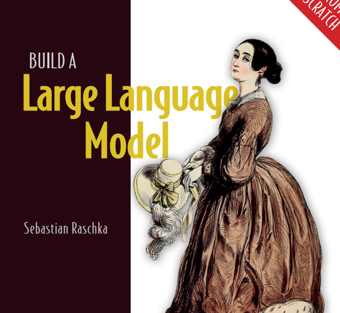
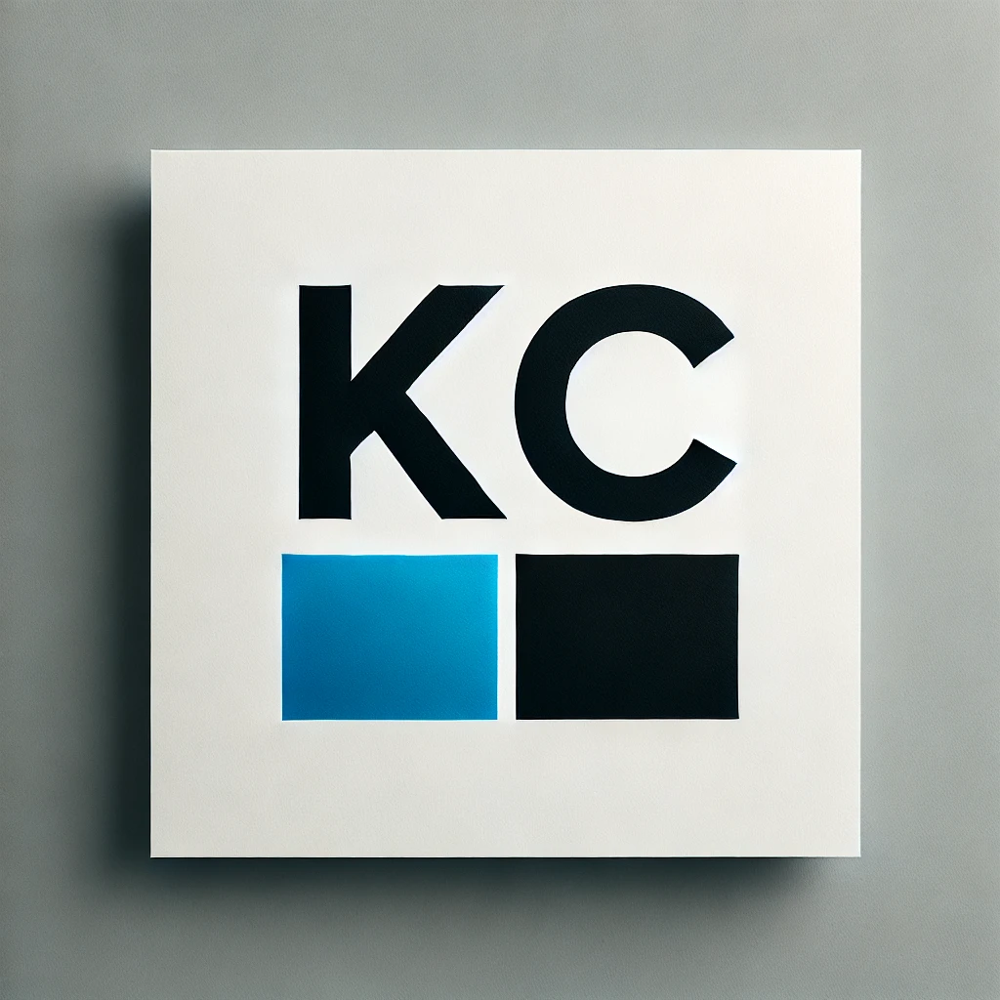
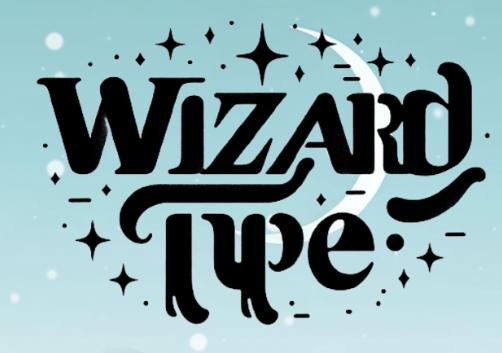

About Me
My Education
I graduated from Lincoln Preparatory Academy in 2024. I'm now a freshman at Arizona State University in Computer Systems Engineering!
My Passions
I am deeply passionate about exploring cutting-edge technology, including AI trustworthiness, sustainable computing, and accesibility-oriented robotics.
Accomplishments
Flinn Finalist in the 2024 Cohort! National Hispanic Scholar. Forgot to add salt to my empanadas... 3 times.
Proudly a part of ARC Lab with Professor Zhou at ASU!
My Goals
In the near future, I want to publish a paper on Large Language Models and conduct valuable research that can hopefully make an impact in the world of AI innovation.
My Projects
Developing LLM Bias Metric @ ARC Lab w/ FURI | Current
I'm working with Professor Ben Zhou and his students to identify a problem with Large Language Models' reasoning and bias issues and attempting to create a metric to determine the reliability of an LLM's response.
1800's Trained AI Model | 2025
I had a blast learning to build an LLM from scratch. From the attention blocks, transformers, tokenizers, and data-loaders, I learned a ton. I decided to train a model on around 1.7m tokens of 1800's text. It turned out decently well, just a bit too much memorizing.

KodaCo Auditor | 2024
I built a medical auditor for KodaCo. It uses OpenAI's API to read through audit logs of patients and ensure proper patient care. It uses carefully crafted prompts developed alongside medical professionals to ensure the highest levels of patient safety.

WizardTyper | 2024
A fun project that had me working as a full stack developer. I created the website from scratch, including all the frontend and backend functionality. It uses Python, JavaScript, HTML, CSS, and a framework through Flask, SQLAlchemy, and Bootstrap.
